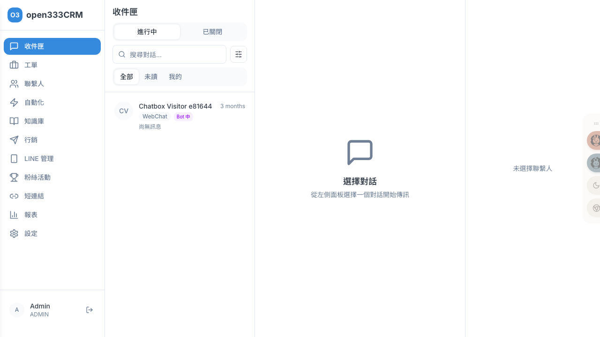
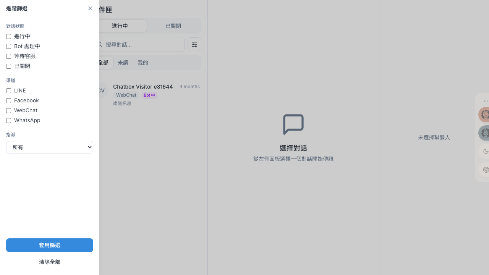
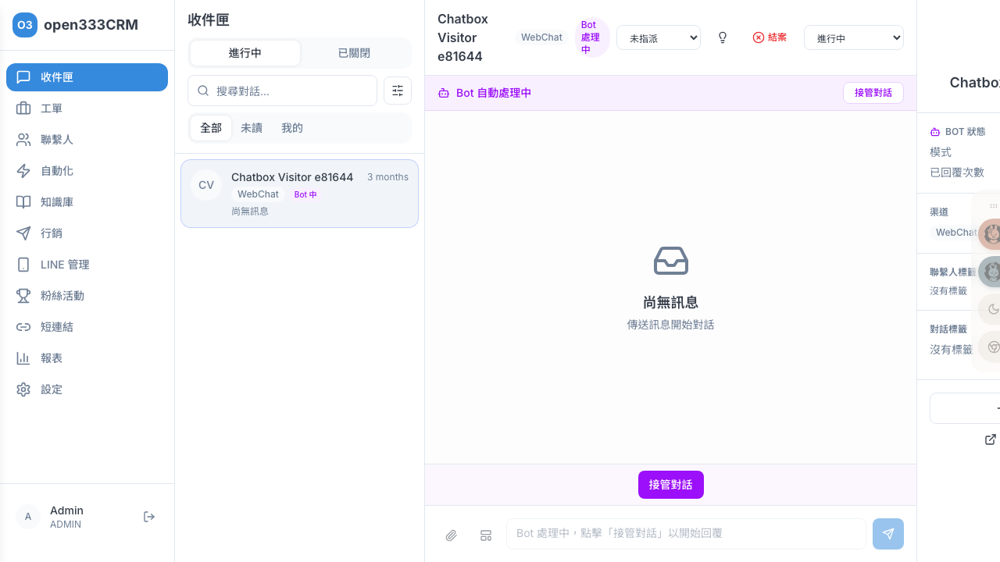
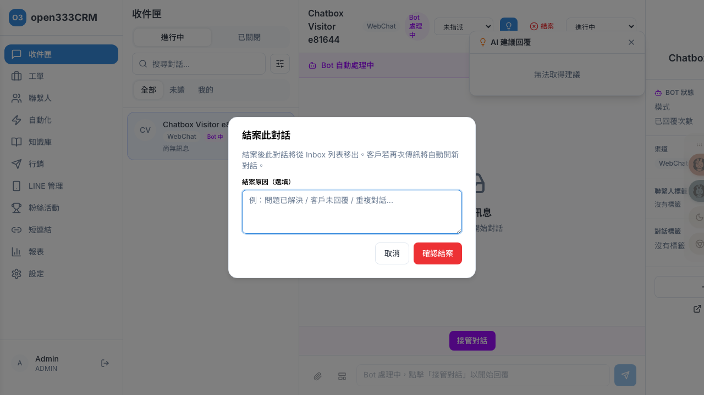
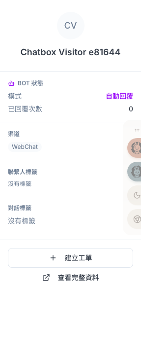

收件匣
在單一畫面接收與回覆來自 LINE、Facebook、網頁聊天的所有客戶訊息。取用 AI 建議回覆、從 Bot 接管對話、套用模板、建立工單，並在對話結束後發送滿意度調查。
1 功能總覽
「收件匣」是客服人員每天的主要工作區。所有通道的客戶訊息都會匯集到這裡，以三欄式介面呈現。客服在這裡即時收發訊息、管理對話狀態、指派客服、接管 Bot 對話、取用 AI 建議回覆、套用模板、加入標籤，以及從對話直接建立工單。
/dashboard/inbox。2 三欄式版面
收件匣採三欄佈局，各司其職：

| 欄位 | 內容 | 用途 |
|---|---|---|
| 左欄 | 對話列表 | 切換分頁、搜尋與篩選、點選要處理的對話 |
| 中欄 | 聊天視窗 | 收發訊息、指派客服、變更狀態、AI 建議、結案 |
| 右欄 | 聯繫人資訊 | 查看客戶資料、標籤、渠道身份，並可建立工單 |
3 對話列表
左欄頂端有「進行中」與「已關閉」兩個主分頁。「進行中」分頁下另有「全部 / 未讀 / 我的」子分頁；「已關閉」分頁則提供時間範圍下拉（最近 7 / 30 / 90 天，預設 30 天）。搜尋框可即時過濾（比對聯繫人名稱與最後訊息內容）。
對話項目上的標記
每則對話會顯示頭像、聯繫人名稱、相對時間、渠道徽章與最後訊息預覽，並依情況出現以下標記：
| 標記 | 意義 |
|---|---|
| Bot 中 | 此對話正由 Bot 自動處理 |
| ● 綠點 | 最後訊息情緒為正面 |
| ● 紅點 | 最後訊息情緒為負面 |
| 檔案圖示 | 此對話已關聯工單 |
| 未讀數徽章 | 未讀訊息數（超過 99 顯示「99+」） |
「已關閉」分頁的對話項目還會顯示 CSAT 星等分數。非文字訊息的預覽會顯示類型標示，例如 [圖片]、[檔案]、[卡片訊息]、[貼圖]、[影片]、[語音]、[位置]。
4 進階篩選
點搜尋框右側的滑桿圖示，從左側滑出「進階篩選」抽屜，可依三組條件精確過濾對話。

| 條件 | 可選值 | 選法 |
|---|---|---|
| 對話狀態 | 進行中、Bot 處理中、等待客服、已關閉 | 複選 |
| 渠道 | LINE、Facebook、WebChat、WhatsApp | 複選 |
| 指派 | 所有、我的對話、未指派 | 單選 |
套用後，列表上方會出現可移除的篩選膠囊，並顯示「篩選結果：N 個對話」。要清除所有條件，點抽屜底部的「清除全部」。
5 聊天視窗表頭
選定對話後，中欄上方的表頭顯示聯繫人名稱、渠道徽章、狀態徽章，以及一排操作控制項。下圖為一個「Bot 自動處理中」的對話，可看到狀態橫幅、鎖定的輸入區與「接管對話」按鈕：

表頭的操作控制項：
| 控制項 | 功能 |
|---|---|
| 指派客服下拉 | 把對話指派給某位客服（第一項為「未指派」） |
| 狀態下拉 | 切換對話狀態：進行中、已處理、已關閉 |
| AI 建議（燈泡圖示） | 開啟 AI 建議回覆面板（對話未關閉時顯示） |
| 結案 | 結束此對話（未關閉時顯示） |
狀態橫幅
依對話狀態，聊天區上方會出現橫幅：
- Bot 自動處理中：附「接管對話」按鈕（見第 9 節）
- 此對話已關閉：附「重新開啟對話」按鈕
6 回覆訊息
在中欄聊天視窗底部的輸入區打字即可回覆。Enter 傳送、Shift+Enter 換行（支援中文輸入法組字判斷，不會誤送）。輸入區左側有三個工具按鈕：
| 按鈕 | 功能 |
|---|---|
| 附件 | 上傳圖片。僅支援 PNG / JPG，上限 20MB；且僅 LINE / FB / Webchat 可傳圖 |
| 模板 | 開啟「選擇模板」（見第 7 節） |
| 快速回覆 | （僅 LINE）加入快速回覆按鈕，上限 13 個、每個文字上限 20 字 |
7 套用模板
模板是預先寫好的罐頭訊息，可加快回覆速度、確保用語一致。點輸入區的模板按鈕，會從聊天視窗底部滑出「選擇模板」面板。整個流程分兩個階段。
階段一：挑選模板
面板上方是搜尋框（placeholder「搜尋模板...」），下方是分類分頁，再下方是模板清單。
| 元素 | 說明 |
|---|---|
| 搜尋框 | 輸入關鍵字即時過濾模板名稱 |
| 分類分頁 | 全部 / 一般 / 服務類 / 行銷類 / 產品資訊 / 互動類 / FB / 問候，點分頁只顯示該分類的模板 |
| 模板項目 | 每筆顯示模板名稱、分類徽章、內容預覽首行 |
每個模板項目上的徽章代表：
| 徽章 | 意義 |
|---|---|
| 分類名 | 此模板所屬分類（如「服務類」） |
| 含變數 | 此模板內含 {{變數}}，選取後需先填值 |
階段二：填入變數（僅含變數的模板）
模板分兩種情況：
選到含 {{變數}} 的模板（例如 {{contact_name}}、{{order_id}}），會進入「填入變數值」畫面：
- 每個變數一欄，左側顯示變數的顯示名稱（若模板有定義），右側是輸入框
- 有預設值的變數會自動帶入，可直接沿用或修改
- 下方「預覽」區即時顯示變數替換後的最終訊息內容——所見即所送
- 確認無誤後按右下角「插入」，把渲染好的完整內容帶進輸入框
- 左上角的返回箭頭可回到模板清單重選
{{變數名}}），插入前務必檢查預覽區確認每個變數都已替換。8 AI 建議回覆
點聊天視窗表頭的燈泡圖示（AI 建議回覆），系統會依對話脈絡與知識庫產生數則建議回覆，於右側浮出面板。
每則建議顯示：
- 建議內文
- 信心值百分比：≥80% 綠 / ≥50% 黃 / 其餘紅
- 知識庫參考連結：這則建議引用了哪些 KB 文章
- 採用按鈕：把該建議帶入輸入框
9 接管 Bot 對話
當對話由 Bot 自動處理時，狀態橫幅會顯示「Bot 自動處理中」與「接管對話」按鈕。點「接管對話」開啟接管視窗，內含：
| 區塊 | 內容 |
|---|---|
| Bot 對話摘要 | AI 自動整理目前為止的對話重點 |
| Bot 回覆記錄 | 列出 Bot 已回覆的訊息 |
| 指派客服 | 預設「自動指派（我自己）」，指派策略為「最少負荷」 |
| 銜接訊息 | 預設「稍等，正在為您轉接客服人員」，可自訂 |
確認後按「確認接管」，對話即轉為由你處理，輸入區解鎖可回覆。
10 結案與滿意度
問題解決後，點表頭紅色的「結案」按鈕，系統會彈出確認對話框：

對話框說明「結案後此對話將從 Inbox 列表移出。客戶若再次傳訊將自動開新對話。」可填寫選填的結案原因（例：問題已解決 / 客戶未回覆 / 重複對話），按「確認結案」。
滿意度調查（CSAT）
結案後系統可對客戶發送滿意度評分卡（1–5 星）。星等對應：
| 星數 | 1 | 2 | 3 | 4 | 5 |
|---|---|---|---|---|---|
| 意義 | 非常不滿意 | 不滿意 | 一般 | 滿意 | 非常滿意 |
11 聯繫人資訊面板
右欄由上而下顯示客戶的完整脈絡，讓你回應前先掌握對象：

| 區塊 | 內容 |
|---|---|
| 基本資料 | 頭像、姓名、電話、Email |
| Bot 狀態 | （Bot 處理中時）模式、已回覆次數 |
| 結案資訊 | （已關閉且有工單時）CSAT 評分、首回覆時間、關閉時間 |
| 渠道 / 標籤 / 自訂屬性 | 渠道徽章、聯繫人與對話標籤、自訂屬性 |
底部操作
| 按鈕 | 說明 |
|---|---|
| 請求 Email | （LINE / FB 且尚無 email 時）向客戶發送索取 Email 的請求 |
| 建立工單 | 從此對話直接建立服務工單，聯繫人與來源對話自動帶入。詳見「02 · 工單管理」 |
| 查看完整資料 | 跳至該聯繫人的完整詳情頁 |